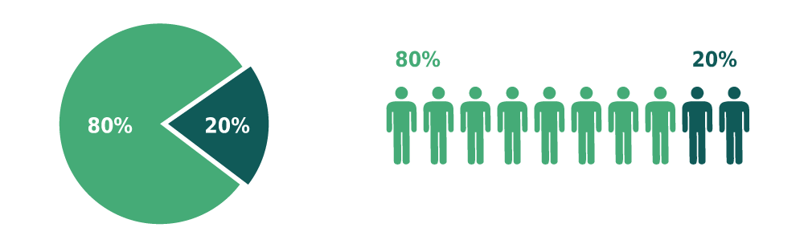
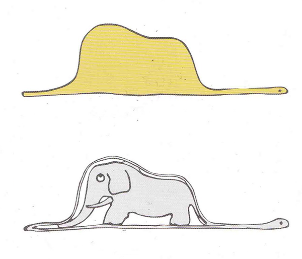
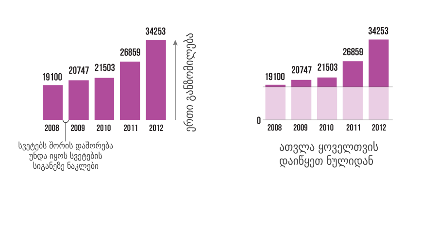
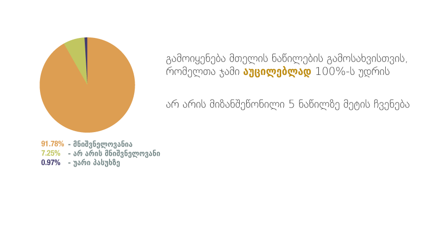
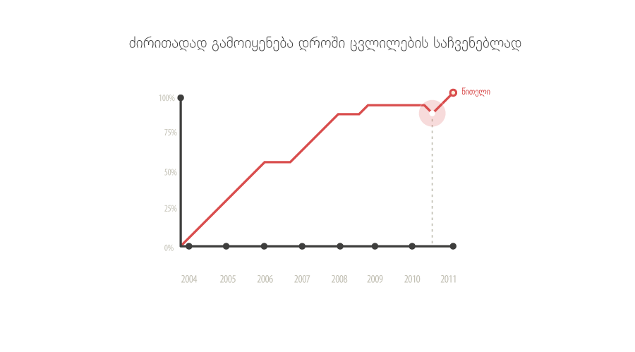
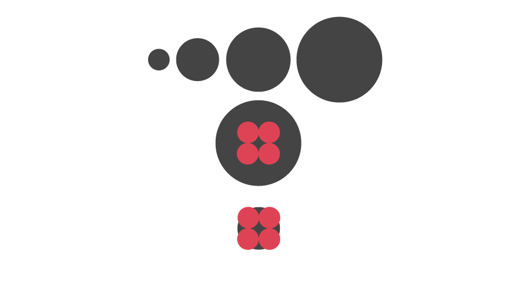
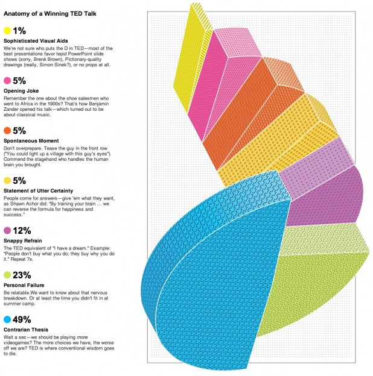

მონაცემთა ვიზუალიზაცია
არის მონაცემების წარმოდგენა გრაფიკული ფორმით
მიზანი:
საზოგადოების ინფორმირებულობა
ვიზუალიზაციის მიზანი არ არის იყოს უბრალოდ ლამაზი! იგი სტრუქტურირებულად და ნათლად უნდა ასახავდეს სინამდვილეს
გადმოეცი ამბავი
რა პროგრამა გამოვიყენოთ?
თუ ვილაპარაკებთ უშუალოდ დიზაინის პროცესზე, პასუხია - Adobe Illustrator
აჩვენე, არ უთხრა!
საკმარისი რომ ყოფილიყო ექსელის ჩარტი, კომპანია არ დაიქირავებდა დიზაინერს
ტიპოგრაფიას აქვს თავისი ადგილი
აირჩიე ფორმა
ფორმის არჩევა არ არის პირადი გემოვნების საკითხი. პირველ რიგში, მთავარია ფორმა შეესაბამებოდეს და სწორად ასახავდეს შინაარსს
სვეტოვანი დიაგრამა (Bar Chart)
წრიული დიაგრამა (Pie Chart)
წრფივი გრაფიკი (Line Graph)
ორი განსხვავებული ზომის ობიექტის ჩვენებისას!
არ გამოიყენოთ სამგანზომილებიანი გრაფიკები
აუცილებლად დაურთეთ
მარიამ ქობულაძე mariam.kobuladze@jumpstart.ge